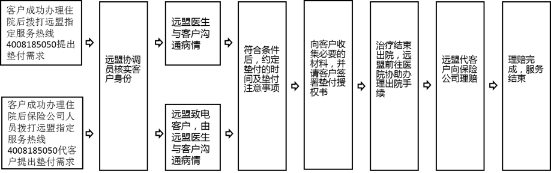

华泰财产保险有限公司
百万医疗被保险人信息授权确认书
投保华泰财产保险有限公司（下称：华泰财险）百万医疗险的投保人/被保险人（下称“您”）投保百万医疗成功即认为您确认并同意华泰财险将您个人保单的相关信息提供至华泰财险指定的健康管理服务公司：远盟康健科技有限公司（下称“远盟”）。以便在您需要提供相应的重大疾病绿色通道、重大疾病住院医疗费用垫付、国内二次诊疗服务时可以快速有效的为您安排各项服务，并且认可华泰财险为您提供的重疾绿通、国内二次诊疗、重疾垫付的服务内容。
请您务必审慎阅读、充分理解本确认书的说明，并同意授权，自愿承担由此导致的一切法律后果。
1、重大疾病绿色通道服务内容：
|
序号 |
服务名称 |
项目说明 |
|
（1） |
重疾咨询服务 |
日常预防重大疾病的医疗咨询及重大疾病治疗、康复的医疗咨询。 |
|
以下服务安排，需您在二级（含）以上公立医院确认罹患重大疾病后，远盟根据您申请或远盟医生建议，根据您实际情况进行安排；第（2）项安排条件：您确诊为重疾且符合保险条款；第（3）（4）项安排条件：医院已开具住院单且医院是远盟的网络医院；远盟将在接到您申请后10工作日内为会员完成重大疾病绿色通道安排 |
||
|
（2） |
二次诊断（每被保险人1次） |
为其预约指定网络医院的门诊挂号以进行二次诊断。 |
|
（3） |
住院安排（每被保险人1次） |
推荐并安排指定网络医院之住院治疗的床位，协助快速办理住院手续。 |
|
（4） |
手术安排（每被保险人1次） |
协调相关专家快速安排手术，并协助做好专家与患者之间的良好沟通。 |
|
（5） |
全程就医陪同服务 |
远盟在提供二次诊断、住院安排或手术安排服务时，提供就医陪同服务。 |
|
（6） |
康复追踪 |
您治疗结束后，远盟将通过电话定期追踪康复状况并提醒复诊时间等注意事项。 |
1）、特别说明
（1）
重大疾病绿色通道服务挂号费用由远盟承担，其他所产生任何相关医疗费用均需由您自行承担。
（2）
远盟在进行二次诊断安排时，将根据您需求及实际情况为其预约普通门诊或特需门诊号源（不承诺您指定专家门诊）。在安排住院时，将选择普通病房。
（3）
本服务若与重大疾病保险绑定，则重大疾病以保险公司指定的重大疾病标准为准，
其中2、3、4项服务首年的等待期与保险产品一致；续服则无等待期限定。本服务若未与重大疾病保险绑定，则重大疾病以保监会规定的重大疾病标准为准，其中2、3、4项服务的等待期为：一般重大疾病等待期30天，涉及甲状腺、扁桃腺、女性生殖系统疾病、疝气等待期120天，意外伤害导致的重大疾病没有等待期。
（4）
远盟将在服务落实前取得您确认，您接受服务后，因本人原因未能按时就医，则视同该次服务已完成。
（5）
若进行精神类疾病和心理类疾病咨询等不在服务范围之内。对于您个人过失或不配合导致的您个人人身、经济损失，由您个人承担。
（6）
服务次数为每个保单有效期内每个被保险人享受的服务次数。
2）、重大疾病范围及介绍（详见重疾清单）
3）、服务方式
您致电远盟指定的服务热线（4008185050）并提出服务申请，远盟应尽快为您完成重大疾病绿色通道安排，最长不能超过10个工作日。
4）、服务流程
2、国内二次诊疗意见服务
1）、服务内容
|
项目 |
项目说明 |
|
第二诊疗意见 （每人一次） |
远盟可通过收集您必要的医疗资料（如诊断证明、结果报告等），由医生专家针对您的病情描述和医疗资料给出书面《第二诊疗意见报告书》： 1.
您应尽可能完整的提供与病情相关的医疗资料。若通过邮寄形式，需提前做好备份防止材料遗失；若通过电子形式，应保证影像清晰。 2.
远盟提供的第二诊疗意见以您提供的医疗资料作为参考依据。 3.
远盟将在接到您需求及完整医疗资料后的5个工作日内出具《第二诊疗意见报告书》。 |
2） 、特殊说明
（1）
涉及材料邮递费用需您自理，为您提供国内二次诊疗服务，所产生的服务安排费用需由远盟承担。
（2）
本服务若与重大疾病保险绑定，则重大疾病以保险公司指定的重大疾病标准为准，
首年的等待期与保险产品一致；续服则无等待期限定。本服务若未与重大疾病保险绑定，则重大疾病以保监会规定的重大疾病标准为准，服务的等待期为：一般重大疾病等待期30天，涉及甲状腺、扁桃腺、女性生殖系统疾病、疝气等待期120天，意外伤害导致的重大疾病没有等待期。
（3）
对于您个人过失或不配合导致的您个人人身、经济损失，由您个人承担。
3）、服务区域
拨打远盟指定服务专线（4008185050）提出服务需求，不限区域。
4）、服务流程
3、住院垫付服务
1）、住院垫付服务内容
|
序号 |
服务细项 |
项目说明 |
|
（1） |
住院费用垫付 |
若您出险且符合保险责任，远盟在获得保险公司授权确认后，可在其保险责任保额范围内或保险公司授权许可的额度范围内为您垫付住院医疗费用。垫付时，需要您同意并签署远盟《医疗费用垫付授权书》。 注：远盟可在保险责任范围内追加垫付。 |
|
（2） |
病情跟踪和医疗监控 |
提供治疗方案评估、治疗进程跟踪、治疗费用监控、垫付费用追加、出院时间确定等服务。 |
|
（3） |
医院报告解读 |
详细分析您的病历、诊断结果、化验结果等相关报告，并为您提供病情分析、医疗建议、康复建议等内容。 |
|
（4） |
理赔材料收集 |
远盟为您垫付住院费用后，将代为收集其在住院过程中产生的各类医疗单据，包括住院病历、诊断证明、检查报告单、出院小结、医疗收据等，并向保险公司申请理赔。 |
2）、服务方式
有垫付需求时，您可致电远盟专属服务热线（4008185050）提出需求。远盟将在48小时内安排专人负责落实垫付服务。
3）、服务流程
